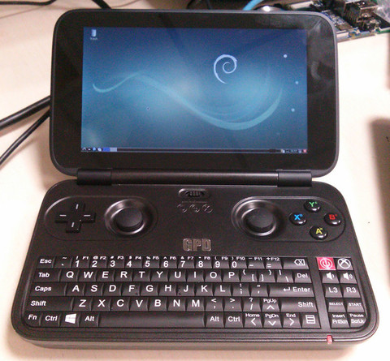

Steward
分享是一種喜悅、更是一種幸福
掌機 - GPD Win 上蓋鋁合金版 - Debian 9.0 - 安裝系統(LXDE)
司徒最習慣的操作系統就屬Debian系統，雖然GPD Win掌機目前已經可以安裝Arch Linux系統，不過用來用去還是Debian系統最為習慣，畢竟司徒從Nokia N900就開始使用Easy Debian系統，對Debian系統的熱愛還真是有增無減，而目前最新的Debian版本為9.0(Stretch)，加上GPD Win掌機的效能算是相當强悍，這就讓司徒可以更安心的安裝Debian 9.0，不必擔心跑不動的問題，安裝過程如下說明：
1. 下載Debian 9.0 ISO並且制作USB開機片
2. 接著透過USB開機(Fn + F7)並按照一般安裝步驟就可以安裝完成
3. 解決畫面旋轉的問題
$ sudo vim /etc/X11/xorg.conf.d/20-gpudriver.conf
Section "Device"
Identifier "gma500_gfx"
Driver "fbdev"
Option "Rotate" "CW"
EndSection
$ sudo vim /etc/X11/xorg.conf.d/40-monitor.conf
Section "Monitor"
Identifier "LVDS-0"
Option "Rotate" "right"
EndSection
$ sudo nano /etc/default/grub
GRUB_CMDLINE_LINUX="fbcon=rotate:1 dmi_product_name=GPD-WINI55"
$ sudo grub-mkconfig -o /boot/grub/grub.cfg
4. 安裝Wifi驅動(先透過其它USB網卡上網)
$ sudo apt-get update $ sudo apt-get install wpasupplicant network-manager-gnome firmware-brcm80211
5. 安裝Audio元件
$ sudo apt-get install firmware-intel-sound
完成
